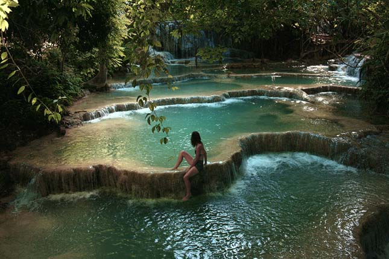
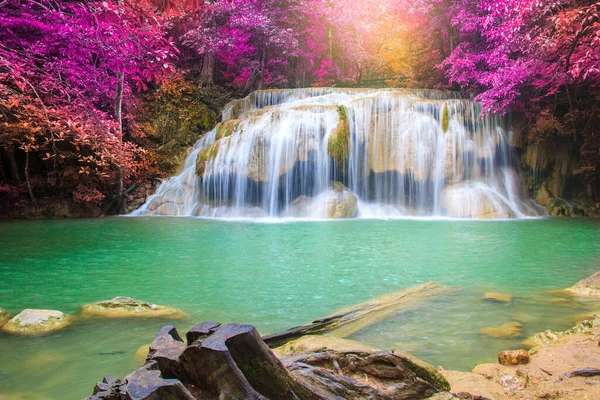

haiföld csupa misztikum, ahol szikrázó napsütés, ősi műemlékek, arany templomok, buddhista szerzetesek, nyüzsgő piacok, a forgalomban szlalomozó tuk tuk-ok, felhőkarcolók, korallzátonyok, homokos tengerpartok, vízesések, és még számtalan életre szóló élményt ígérő látnivaló összpontosul egy helyen. Az aktív programok után érdemes megpihenni az ország pálmafákkal tűzdelt tengerpartjainak egyikén, ahol kényeztető thai masszázzsal lazíthatjuk el fáradt tagjainkat.
Kancsanaburi városától csupán egy rövid kirándulásra található az Erawan-vízesés, a Thaiföld nyugati részén f ekvő Erawan Nemzeti Park legfőbb látványossága. A vízesés a hindu mitológiából ismert, háromfejű fehér elefánt után kapta a nevét. A hétemeletes magasságból lezúduló vízesés állítólag erre az elefántra hasonlít. Gyakran ugrálnak makákók a vízesés körül, néha pedig varánuszok is feltűnnek. A park egész évben nyitva áll a látogatók előtt, fontos azonban, hogy akik nem kedvelik a tömeget, ne hétvégén látogassanak el a csodás nemzeti parkba, akkor ugyanis elég zsúfolt.
Megközelítés:
Szállás:
Összesen: 168.559Ft.
Megközelítés:
Szállás:
Összesen: 67.371Ft.